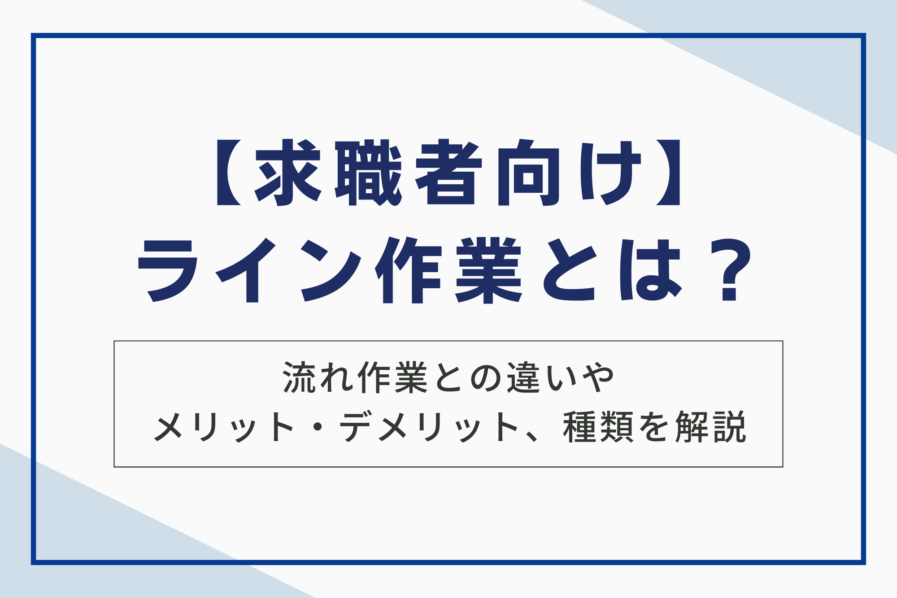

製造業や物流業で広く採用されるライン作業は、効率的な生産体制を築く上で欠かせない要素です。本記事では、ライン作業の基本的な定義から、流れ作業との具体的な違い、導入による利点と注意すべき欠点、そして多様なライン作業の種類までを網羅的に解説します。ライン作業への理解を深め、業務改善や効率化に役立てるための知識を提供します。

ライン作業とは？
ライン作業とは、製品の製造や加工、あるいは商品の仕分けや梱包など一連の工程を、ベルトコンベアなどで連結された作業ラインに沿って、各作業者が分担して行う作業方式のことです。それぞれの作業者は、担当工程の作業に特化することで、全体として効率的な生産活動を実現できます。
定義と概要
ライン作業とは、製品の製造や加工、あるいは商品の仕分けや梱包など、一連の作業工程を複数の作業者が分担して行う生産方式のことです。ベルトコンベアなどで材料や製品を各作業ステーションに運び、作業者は自分の担当工程だけを繰り返し行います。
この工程の流れが、まるで一本の線のように見えることから「ライン作業」と呼ばれています。
主な特徴として、作業の標準化と分業化が挙げられます。各工程を細かく分割し、作業内容をマニュアル化することで、作業者は専門的な知識やスキルがなくても容易に作業を習得できます。
流れ作業との違い
ライン作業と流れ作業は混同されがちですが、厳密には異なる概念です。どちらも製品の製造工程を複数の作業工程に分割し、各作業者が分担して行う生産方式ですが、その違いは作業の連続性にあります。
ライン作業では、各作業者は自分の持ち場にとどまり、ベルトコンベアなどで運ばれてくる製品に対して同じ作業を繰り返します。一方、流れ作業では、作業者が製品とともに移動しながら異なる作業を順次行います。
例えば、自動車の組み立てラインはライン作業の典型例です。各作業者は自分の持ち場で決まった部品の取り付けなどを行います。一方、家電製品の組み立て工程を数人で担当し、完成させるまで製品とともに移動する場合は流れ作業と言えます。
製造業・物流業における役割
ライン作業は、特に製造業と物流業において重要な役割を担っています。大量生産や効率的な商品流通を支える基盤となっており、それぞれの業種で下記のような目的で採用されています。
製造業では、製品の組み立て、部品の加工、検査、梱包など、様々な工程でライン作業が活用されます。各工程を専門の作業員が担当することで、作業効率と生産性を向上させ、低コストでの大量生産を実現しています。
物流業においても、ライン作業は重要な役割を果たしています。ECサイトなどで注文された商品の仕分け、梱包、配送といった工程をライン作業で行うことで、大量の注文を迅速かつ正確に処理することが可能になります。
このように、ライン作業は製造業と物流業の生産性向上に大きく貢献し、私たちの生活を支える様々な製品やサービスを届ける上で欠かせない役割を担っています。

ライン作業の種類と仕事内容
ライン作業は、製造業や物流業など、様々な業界で幅広く行われています。その仕事内容は多岐に渡り、製品の組み立てから梱包、仕分けまで様々な工程があります。ここでは、代表的なライン作業の種類と仕事内容を具体的にご紹介します。
組み立て作業
製品の基盤を形成する重要な工程であり、正確さとスピードが求められます。作業者は、指示された手順に従い、一つ一つの部品を丁寧に組み付けていきます。
電動ドライバーや専用の工具を使用することも多く、製品によっては、手作業による微調整も必要です。この工程でのミスは、後の工程に影響を及ぼすため、高い集中力と責任感が求められます。
加工作業
加工作業は製品の製造過程において重要な工程です。切削、研磨、溶接、塗装など様々な加工方法があり、製品や素材によって作業内容は異なります。高度な技術と安全への配慮が求められる作業です。
機械オペレーター作業
機械オペレーター作業は製造ラインにおける機械の操作・監視を行う重要な役割です。設定されたプログラムに従い、機械が正常に稼働しているかを常にチェックし、必要に応じて調整を行います。機械のメンテナンスや簡単な修理を行うこともあります。正確な操作と機械に関する知識が求められる作業です。
検品作業
検品作業は、ライン作業における重要な工程の一つです。製品の品質を維持し、顧客満足度を高めるために欠かせません。近年では、カメラやセンサーを用いた自動化も進んでいますが、人間の目による確認も依然として重要です。特に、外観検査など、微妙な判断が必要な工程では、熟練した作業員の目視によるチェックが不可欠です。
梱包作業
梱包作業とは、完成した製品を保護し、輸送や保管に適した状態にする作業です。ライン作業における梱包作業は、製品の品質維持と顧客満足度に直結する重要な工程です。梱包作業は、製品の種類や配送方法によって、使用する資材や手順が異なります。
例えば、壊れやすい製品の場合は、エアクッションや発泡スチロールなどの緩衝材を多く使用し、より丁寧に梱包する必要があります。また、海外へ輸出する製品の場合は、国際的な輸送基準に合わせた梱包が求められます。
仕分け作業
仕分け作業とは、荷物の種類や配送先などに応じて、決められたルールに従って荷物を分類する作業です。物流倉庫や配送センターなどで行われ、ライン作業の中でも重要な役割を担っています。 eコマースの普及に伴い、小口配送の需要が増加しており、仕分け作業の重要性はますます高まっています。
その他の作業
ライン作業には、組み立てや加工、検品、梱包、仕分け以外にもさまざまな作業があります。具体例として以下が挙げられます。
- 検査：製品の動作確認や性能テストを行う（例：電気製品の通電検査、自動車の走行テスト）。
- 塗装：製品に塗装を施す作業（例：自動車や家具の塗装）。
- 溶接：金属部品を接合する作業（例：自動車の車体や鉄骨の組立）。
- 機械オペレーション：機械を操作して製品を製造する（例：射出成形機やプレス機の操作）。
- ピッキング：倉庫から必要な部品や商品を取り出す（例：製造ラインへの部品供給や注文商品のピッキング）。
これらの作業は、製品の種類や製造工程によって異なります。また、近年では自動化技術の進歩により、ロボットやAIを活用した作業も増えてきています。
ライン作業のメリットは5つ
ライン作業は、未経験者でも比較的容易に業務を習得できる点が魅力です。作業は細分化され、各担当者は特定の工程に集中するため、高度な専門知識やスキルは必ずしも必要ではありません。また、作業手順はマニュアル化されていることが多く、研修やOJTを通じて短期間で業務に慣れることが可能です。
これにより、経験が浅い方や異業種からの転職者でも、比較的スムーズに仕事に取り組むことができます。さらに、作業内容が明確であるため、自分の役割を理解しやすく、安心して作業に取り組める環境が提供されます。
1.未経験者でも就業できる
ライン作業は、未経験者でも就業しやすい点が大きなメリットです。多くの場合、作業内容はシンプルで、特別なスキルや資格がなくても始めることができます。手順がマニュアル化されているため、研修やOJTを通じて比較的短期間で仕事を覚えることが可能です。
また、未経験者歓迎の求人が多く、若年層から中高年層まで幅広い年齢層の方が活躍しています。学歴や職歴に自信がない方でも、ライン作業を通して新たなキャリアをスタートできる可能性があります。正社員登用制度を設けている企業もあり、将来的に安定した雇用を目指すことも可能です。
さらに、派遣会社を通してライン作業に従事する道も開かれています。派遣社員として働くことで、様々な企業や職種を経験し、自分に合った仕事を見つける機会にもなります。
このように、ライン作業は未経験者にとって就業のハードルが低く、様々なメリットがあります。
2.作業の習熟が早い
作業の反復により、個々の作業員のスキルアップも期待できます。一定の作業を繰り返すことで、無駄な動作が削減され、作業スピードや正確性が向上します。また、熟練した作業員は、新人への指導役としても活躍し、チーム全体の能力向上にも貢献します。
さらに、習熟度に応じて、より高度な工程を担当することも可能となり、自身の成長を実感しやすい点も魅力です。
3.分業により効率化が図れる
ライン作業の大きなメリットの一つは、分業による効率化です。作業工程を細かく分割し、各作業者に特定の業務を割り当てることで、全体の生産性向上を実現できます。
例えば、1台の自動車を製造する工程を10個に分割し、10人の作業者がそれぞれ担当するとします。各作業者が自分の担当工程に集中することで、作業効率が上がり、短時間で1台の自動車を完成させることができます。これは、1人の作業者が全ての工程を担当する場合と比べて、はるかに効率的です。
また、作業の標準化も容易になります。各工程の作業内容を明確に定義することで、作業の質を均一化し、安定した品質の製品を生産することが可能になります。
このように、ライン作業における分業は、生産性向上とコスト削減に大きく貢献する重要な要素です。
4.コストの削減につながる
ライン作業は、製造コストの削減に大きく貢献します。その仕組みを、人件費、設備投資、生産性向上という3つの観点から見ていきましょう。
まず人件費の面では、ライン作業は作業工程を細分化し、それぞれに特化した担当者を配置することで、高度なスキルを持つ人材を必要とする工程を最小限に抑えられます。これにより、比較的低い賃金で雇用できる未経験者やパートタイム労働者を多数活用することが可能になり、人件費全体を抑制できます。
次に設備投資の面では、ライン作業は一度設備を導入すれば、長期間にわたって同じ製品を大量生産できます。初期投資は大きくなる場合もありますが、生産量が増えるほど1製品あたりの設備投資コストは減少するため、結果的にコスト削減につながります。
最後に生産性向上という点では、ライン作業は分業体制によって各作業員の専門性を高め、作業スピードの向上を促します。また、作業の標準化や自動化を進めることで、生産効率をさらに高め、生産量増加によるコスト削減効果も期待できます。
5.製品の品質が安定する
ライン作業は、製品品質の安定化に大きく貢献します。作業が標準化・分業化されているため、個々の作業者の技量に左右されにくく、均一な品質の製品を生産することが可能です。
製品の品質が安定することで、顧客満足度の向上、企業イメージの向上、不良品発生率の低下によるコスト削減など、様々なメリットが得られます。このように、ライン作業は製品の品質安定化に大きく貢献する手法と言えます。
ライン作業のデメリットは5つ
ライン作業は効率的な反面、いくつかのデメリットも存在します。これらのデメリットを理解した上で、ライン作業に従事する際は、適切な対策を講じることが重要です。
1.単調作業による疲労・ストレス
ライン作業は、同じ作業を繰り返す単調作業になりがちです。この単調さは、身体的・精神的な疲労やストレスを引き起こす可能性があります。
長時間同じ姿勢で作業を続けることで、肩こりや腰痛、手首の痛みといった身体的な負担が生じます。また、単純作業の繰り返しは、精神的な疲労や倦怠感、集中力の低下を招き、作業ミスにもつながりかねません。
2.作業の柔軟性の欠如
ライン作業は、決められた作業手順を繰り返すことが求められます。そのため、作業内容や手順の変更に対応することが難しく、柔軟性に欠ける側面があります。ライン作業では、各作業者は自分の担当工程に特化しており、他の工程の作業を兼任することは少ないです。
そのため、予期せぬ事態が発生した場合、迅速かつ柔軟な対応が難しく、生産性や効率に影響を与える可能性があります。例えば、急な注文増や製品仕様の変更、作業者の欠勤などに対応するには、ライン全体の調整や作業者の再教育が必要となるため、時間とコストがかかります。
3.人間関係の希薄化
ライン作業では、同じ作業を繰り返し行うため、作業者同士のコミュニケーションが希薄になりがちです。これは、作業に集中する必要があるため、会話する時間が限られることや、作業内容が単純であるため、共有する話題が少ないことなどが原因として挙げられます。
また、ライン作業では、担当工程が細分化されているため、他の作業者との関わりが少なく、全体像を把握しにくいという側面もあります。そのため、自分の仕事への責任感ややりがいを感じにくくなり、仕事へのモチベーションが低下する可能性も懸念されます。
さらに、休憩時間や勤務時間外での交流が少ないことも、人間関係の希薄化につながります。同じ職場であっても、プライベートな情報交換や親睦を深める機会が不足すると、職場内での人間関係が表面的になりがちです。
4.機械トラブルの影響
ライン作業は、ベルトコンベアや専用機器などを使用し、流れ作業によって製品を生産したり処理したりします。そのため、1つの工程で機械が停止すると、後続の工程すべてがストップしてしまうというリスクがあります。これは、生産性の低下に直結し、企業にとって大きな損失につながります。
これらの機械トラブルは、作業者個人では解決できない場合が多く、専門の技術者による修理が必要になります。復旧までに時間を要することもあり、その間の生産ラインは完全に停止状態となるため、納期遅延などの問題を引き起こす可能性があります。
また、機械トラブルは突発的に発生することが多く、生産計画に大きな狂いを生じさせます。そのため、ライン作業に従事する作業者は、常に機械の状態に気を配り、異常に気づいたら速やかに報告する必要があります。企業側も定期的なメンテナンスや点検を実施することで、トラブル発生のリスクを最小限に抑える努力が求められます。
5.身体への負担
ライン作業は、同じ動作を繰り返す作業が多いため、身体への負担は少なくありません。長時間同じ姿勢での作業や、重量物の持ち運び、反復動作による負荷は、様々な身体の不調につながる可能性があります。
| 身体への負担の例 | 具体的な症状 |
| 目の疲れ | ドライアイ、視力低下 |
| 肩こり | 肩の痛み、頭痛 |
| 腰痛 | 腰の痛み、痺れ |
| 手首の痛み | 腱鞘炎、手根管症候群 |
| 足のむくみ | だるさ、痛み |
これらの症状は、作業効率の低下や欠勤につながるだけでなく、長期化すると慢性的な疾患に発展する可能性もあります。
ライン作業に従事する際は、作業中の姿勢や動作に気を配り、休憩時間を適切に取得することが重要です。また、作業環境の改善や、作業負担を軽減するための補助器具の導入なども効果的です。
ライン作業に向いている人・向いていない人
同じ作業を繰り返すため、変化を好まずコツコツと作業に取り組める忍耐力も求められます。一方で、飽き性で単調な作業が苦手な人、自分のペースで仕事を進めたい人などはライン作業に不向きかもしれません。ライン作業が向いている人、向いていない人を詳しく見ていきましょう。
向いている人の特徴（集中力、真面目さ、協調性など）
ライン作業は、決められた手順を正確に繰り返すことが求められるため、特定の資質を持った人が活躍しやすい仕事です。
どのような人がライン作業に向いているのか、いくつかの特徴を挙げて解説します。
| 特徴 | 説明 |
| 集中力が高い | 単調な作業でも、長時間集中力を維持できる人はライン作業に向いています。 |
| 真面目さ | 指示された手順を忠実に守り、ミスなく作業を進められる真面目さも重要です。 |
| 協調性 | ライン作業はチームで行うため、周りの人と協力して作業を進められる協調性が必要です。 |
| 忍耐力 | 同じ作業の繰り返しに飽きずに、コツコツと続けられる忍耐力も必要です。 |
| 手先の器用さ | 製品によっては、細かい部品を扱う作業もあります。手先の器用な人は、そのような作業もスムーズに進められます。 |
| 体力 | ラインによっては立ち仕事や重いものを扱う作業もあります。体力に自信のある人は、そのような作業にも対応できます。 |
これらの特徴は、必ずしも全て備わっている必要はありません。
しかし、これらの特徴を持つ人は、ライン作業で高いパフォーマンスを発揮し、仕事への満足度も高くなる傾向があります。
自分がライン作業に向いているかどうかを考える際の参考にしてください。
向いていない人の特徴（飽き性、コミュニケーション重視、創造性を発揮したいなど）
ライン作業は、同じ作業の繰り返しとなるため、飽き性の方には苦痛となる可能性があります。また、決められた手順や工程を遵守する必要があるため、創造性を発揮したい方には不向きです。
さらに、コミュニケーションを重視する方にとっても、作業中は会話が制限されるライン作業は、物足りなさを感じるかもしれません。ライン作業は、集中力や真面目さ、協調性などが求められる仕事です。反対に、飽きっぽく、常に変化を求める人や、自分のペースで自由に仕事を進めたい人にとっては、適していない可能性があります。
ライン作業とはでよくある3つの質問
「ライン作業とは」に関するよくある質問について解説します。ライン作業の仕事に興味のある方は、ぜひ参考にしてください。
質問1.ライン作業の仕事はきついですか？
ライン作業のきつさは、仕事内容や職場環境によって大きく異なります。立ち仕事が多い、同じ作業の繰り返しで飽きやすい、重量物を扱うなど、身体的・精神的に負担がかかる作業もあるでしょう。
しかし、近年では作業環境の改善や、従業員の負担軽減に配慮した職場も増えてきています。例えば、人間工学に基づいた椅子の導入、休憩時間の適切な確保、作業ローテーションの実施など、従業員の健康と安全を重視する企業も少なくありません。
また、仕事内容も単純作業だけでなく、高度な技術や知識を必要とする作業もあります。自身のスキルや適性に合わせて仕事を選ぶことで、無理なく働くことができます。求人情報などをよく確認し、職場見学や面接を通して、実際の作業内容や職場環境を把握することが大切です。
質問2.ライン作業の給料はどのくらいですか？
ライン作業の給料は、業種、職種、地域、経験などによって異なります。平均的には時給900円〜1500円程度、月収で18万円〜30万円程度の求人が多いようです。
ただし、夜勤や残業、休日出勤などがある場合は、割増賃金が発生し、収入が増える可能性もあるでしょう。また、正社員の場合は、賞与や昇給制度がある場合もあります。
具体的な給与額は、求人情報で確認することが重要です。応募前に、給与体系や諸手当、昇給・賞与の有無などをしっかり確認しておきましょう。
質問3.ライン作業の将来性は？
自動化やAIの導入が進む中で、ライン作業の将来性について不安を感じる方もいるかもしれません。確かに、単純な作業は機械に代替される可能性がありますが、一方で、機械の操作やメンテナンス、品質管理など、人間の役割は依然として重要です。
特に、高度な技術や知識を必要とする仕事や、臨機応変な対応が求められる仕事は、今後も人間が担うと考えられます。ライン作業に従事しながら、専門的なスキルを習得したり、多能工を目指したりすることで、将来性を高めることができるでしょう。
また、少子高齢化による労働力不足は深刻化しており、ライン作業の需要は今後も一定程度存在すると予想されます。
まとめ
ライン作業は、今後も様々な変化が予想されます。特に、少子高齢化による労働力不足や、Industry 4.0といった技術革新の影響は大きく、自動化・AI化の進展がライン作業のあり方を変えていくでしょう。これらの変化に対応するには、企業は生産性向上と従業員の働きがい向上を両立させる必要があります。
なお、株式会社ベルジャパンは、有料職業紹介業のなかでも豊富な実績ときめ細やかなサポート体制を強みとしており、求職者・企業双方から高い評価をいただいております。独自のネットワークを活かして非公開求人を含む多様な案件をご紹介できる点が大きな特長です。
さらに、専任コンサルタントがキャリアやスキル、ライフスタイルなどを詳しくヒアリングすることで、一人ひとりに最適化されたサポートを実現しています。⇛ベルジャパンに相談する